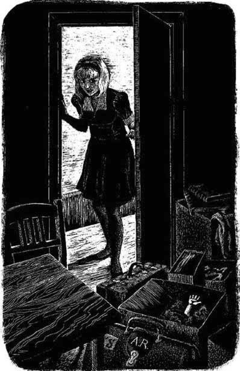
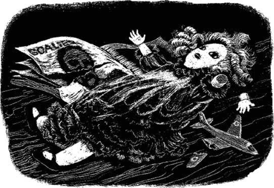

13
Listen to Part 1:

Phòng Đặc chế
Anna về tới nhà vào khoảng mười giờ. Cô bật radio lên và nghe tin tức. Chủ tịch của I.C.S. đã chết và ông Riseman là Chủ tịch mới.
Anna không ngủ nổi đêm hôm đó. Cô cứ nghĩ mãi về Dave Slatin và những Đơn Đặc chế. Đơn đó là cái gì? Tại sao Dave Slatin lại vào phòng đó?
Sáng thứ Bảy, cô đến cửa hàng. Dave không nói gì với cô. Anh ta tức giận vì Anna đã không làm việc vào thứ Sáu. Anh ta không hỏi về ngày nghỉ của cô và Anna cũng không nói với anh về lý do đó.
Mười một giờ, Dave rời cửa hàng. Anh ta lên xe và lái đi.
Anna ở một mình. Đây chính là cơ hội của cô! Cô đi về phía sau cửa hàng và vặn tay nắm cánh cửa đang khóa.
Nhưng phòng Đơn Đặc chế không có khóa! Dave đã quên khóa cửa. Anna mở cửa và đi vào phòng.
Đó là một căn phòng nhỏ, tối và nóng. Anna bật đèn, nhưng đó không phải là một ngọn đèn quá sáng.
Cô nhìn quanh căn phòng. Có một chiếc bàn, hai chiếc ghế cũ và rất nhiều hộp. Chỉ có vậy thôi. Đơn Đặc chế? Không có sổ viết đơn, không có giấy tờ, không có bút chì.
Anna đi vòng quanh bàn. Khó đi lắm vì trên sàn có rất nhiều thùng. Anna mở một trong những thùng đó ra và nhìn vào bên trong. Cô thấy vài cuốn tạp chí và báo cũ. Dưới chúng là vài bộ quần áo cũ bẩn.
Listen to Part 2:
Nhưng dưới đống quần áo, cô phát hiện ra một khoản tiền. Rất nhiều tiền. Tiền Anh. Tiền Pháp. Tiền Mỹ. Tiền Đức. Có tiền của khắp mọi nơi trên thế giới. Anna kinh ngạc. Cô chưa bao giờ nhìn thấy nhiều tiền như vậy.

Anna mở cửa và đi vào phòng.
Cô nhìn quanh thêm lần nữa và tìm thấy chiếc vali của Mike Bailey. Nó rỗng tuếch. Sau đó cô tìm thấy cặp tài liệu của Arthur Riseman. Cái đó cũng rỗng tuếch.
Sau đó Anna nhìn vào một chiếc hộp lớn hơn. Trong đó có vài con búp bê với cánh tay và chân bị gãy. Một trong số những con búp bê đó rất đẹp, nhưng bị gãy mất một cánh tay. Anna đặt nó lên bàn.
Sau đó Anna tìm thấy một cuốn sách về bóng đá. Trong đó có một vài bức ảnh cầu thủ nhưng chúng đều bị xé rách. Anna đặt cuốn sách lên bàn.
Anna lại nhìn vào trong hộp và tìm thấy một vài chiếc ô tô nhỏ. Hầu hết chúng đều bị vỡ. Cô tìm thấy một chiếc máy bay mô hình nhỏ. Nó cũng bị hỏng.

Anna đặt tất cả những thứ đó lên bàn. Thật là một bộ sưu tập kỳ lạ! Có tiền, có búp bê gãy, có ô tô đồ chơi, có máy bay mô hình. Và còn có cuốn sách về bóng đá với những bức ảnh bị xé rách. Anna nhìn những thứ trên bàn. Chúng dùng để làm gì? Tại sao Dave Slatin lại giấu chúng trong căn phòng khóa kín này?
Bỗng Anna giật mình. Có tiếng động phía sau cô. Có ai đó đang đứng ở cửa.
Mục lục
- Tựa sách
- Trang bìa
- Thông tin bản quyền
- Mục lục
- Những người trong truyện
- 1. Người lạ ở Woodend
- 2. Cuộc họp trong làng
- 3. Cửa hàng góc phố
- 4. Vị khách xinh đẹp
- 5. Một trang trên báo ‘Bản tin phim’
- 6. Một nụ hôn vội vã
- 7. Một đơn đặt hàng đặc biệt khác
- 8. Trận bóng đá
- 9. Một cuối tuần bí mật
- 10. Một cuộc cãi vã
- 11. Arthur Riseman
- 12. Anna chờ đợi tin tức
- 13. Phòng xử lý đơn đặt hàng đặc biệt
- 14. Những vị khách đặc biệt
- 15. Ngày 31 tháng 10
- Điểm hiểu bài